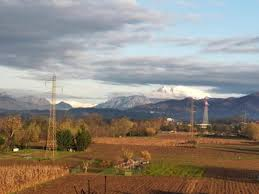
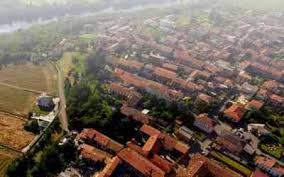

Morfologia |
|
|---|---|
| Altitudine: | circa 222 metri s.l.m. |
| Tipo di territorio: | principalmente pianeggiante, non particolarmente fertile |
| Fiume Adda: | il rapporto col fiume Adda è ststo da sempre molto importante, il comune di sviluppa sulla sponda sinistra del fiume |
| Le cave: | Sono molto importanti le cave di ghiaia, anche nel corso del passato |
La chiesa di San Vittore è la parrocchiale di Bottanuco, in provincia e diocesi di Bergamo; fa parte del vicariato di Calepio-Telgate. La chiesa conserva le tele di Federico Ferrario, di Francesco Capella e di Enea Salmeggia.
Piazza San Vittore, 16 — 24040 Bottanuco (BG)
La chiesa di San Vittore Martire a Bottanuco ha origini medievali: è documentata già nel XIII secolo come dipendente dalla pieve di Terno d’Isola. Nei secoli successivi venne più volte citata nei registri ecclesiastici e visitata da figure importanti come Carlo Borromeo nel 1575. L’edificio attuale fu costruito tra il 1669 e il 1702 in stile barocco e consacrato nel 1740. Nel tempo la chiesa si arricchì di altari, decorazioni e opere di pittori lombardi. Divenne il centro religioso stabile della comunità, mantenendo fino a oggi il ruolo di parrocchiale di Bottanuco.
La chiesa di San Vittore Martire a Bottanuco si presenta come un elegante edificio barocco, con una facciata armoniosa scandita da lesene e coronata da un grande timpano centrale. Nelle nicchie trovano posto le statue dei santi protettori, mentre al centro spicca la figura di San Vittore, che domina l’ingresso. L’interno è a navata unica, luminoso e ben proporzionato, arricchito da cappelle laterali e da decorazioni tipiche del Seicento e Settecento. Le tele e gli altari in marmo contribuiscono a creare un’atmosfera sobria ma solenne, rendendo la chiesa un punto di riferimento spirituale e architettonico per l’intero paese.


La chiesa della Visitazione di Maria Santissima è la parrocchiale di Cerro frazione di Bottanuco in provincia e diocesi di Bergamo; fa parte del vicariato di Capriate-Chignolo-Terno. La chiesa conserva opere cinquecentesche e seicentesche tra le quali il dipinto posto sull'altare maggiore di Pietro Ronzelli raffigurante la Visitazione di Maria.
Via Santa Maria n. 7, 24040 Bottanuco (BG), frazione Cerro.
La prima chiesa del Cerro risale al Quattrocento ed era un piccolo edificio costruito dagli abitanti della zona chiamata “Masatica”. Fu visitata da Carlo Borromeo nel 1575 e nel Seicento vennero aggiunti coro e campanile. Nell’Ottocento, a causa della crescita della popolazione, si decise di edificare una nuova chiesa più ampia: i lavori iniziarono nel 1880 su progetto di Antonio Piccinelli. La parrocchia divenne autonoma nel 1907 e l’attuale chiesa venne consacrata nel 1921. Al suo interno conserva opere provenienti dall’edificio antico, segno della continuità storica della comunità.
La chiesa della Visitazione di Maria Santissima a Bottanuco (frazione Cerro) è la parrocchiale del paese, ricostruita alla fine dell’Ottocento su progetto di Antonio Piccinelli. La facciata presenta un portico con quattro colonne e un timpano sormontato da statue. L’interno, a navata unica e con pianta a croce latina, custodisce opere provenienti dall’antica chiesa del XV secolo, tra cui la pala seicentesca della Visitazione di Pietro Ronzelli. È un edificio che unisce storia, devozione e arte della comunità locale.